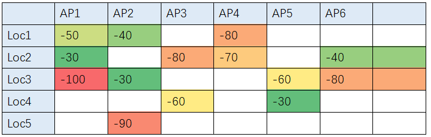
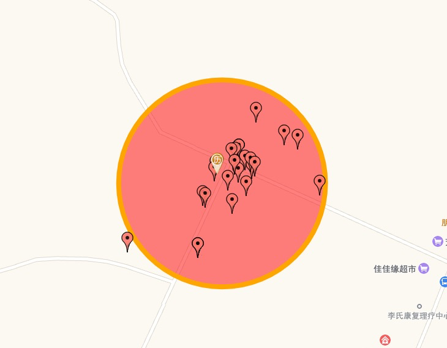
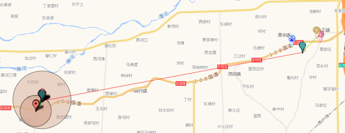
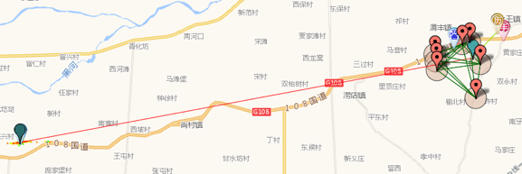
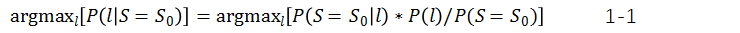
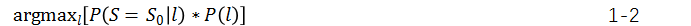
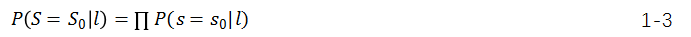
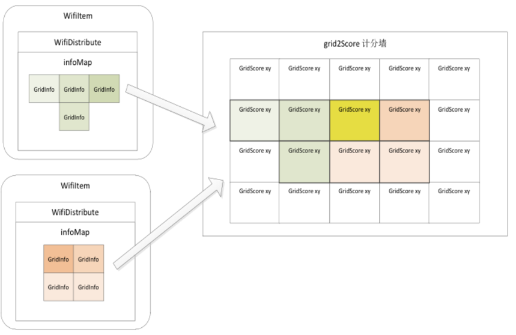
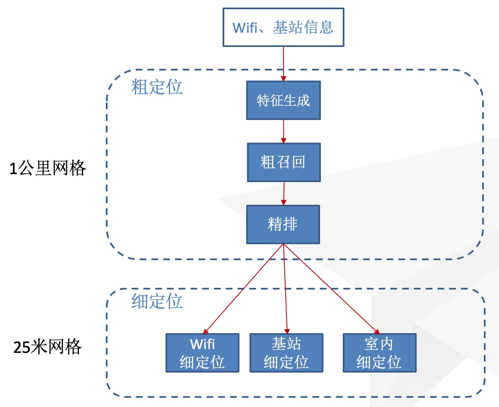
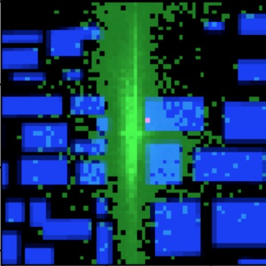

原文连接:https://www.cnblogs.com/amap_tech/p/12095387.html
1.导读
GPS定位精度高，且早已成为移动设备标配，但GPS也具有一些难以克服的缺陷，包括：
- 冷启动时间长。GPS启动时，需要进行搜星，锁定卫星信号，然后再进行位置技术，这个过程可能会达到几十秒，即使采用诸如AGPS等技术，仍然有秒级的时间无法定位。
- 室内或有遮挡的场景。GPS信号弱，无法有效定位。
用户需要持续的有效定位，因此需要另一个技术对GPS进行补充，这就是网络定位技术。
网络定位是将手机设备收到的信号（主要是基站、Wifi、蓝牙）发送到网络服务器，获得位置。之所以要将信号数据发送到网络上，是因为网络定位是利用信号指纹进行定位，需要一个庞大的且持续更新的指纹数据库，这个数据库难以同步到移动设备上。为了进行定位，需要事先建立每个位置的指纹特征，然后在定位时用实时指纹比对每个位置的历史指纹，确定位置。
高德网络定位不仅承担着高德地图用户的定位请求，还面向国内所有主流手机厂商，以及国内30万以上App提供服务，日均处理请求千亿次，峰值QPS百万级。
在过去的几年中，高德网络定位算法经历了从无监督算法向有监督算法的演进，从定位精度、定位能力透出等方面都有了显著的提升。
注：高德网络定位只存在于安卓平台上，在iOS上由于苹果公司未开放任何定位相关的指纹数据（Wifi、基站列表等），定位结果全部来自于iOS自身。
2.基于聚类的无监督算法
经典的指纹定位算法是无监督算法，其核心是计算指纹的相似性，用指纹确定位置。下图是一个例子，AP代表手机扫描到的基站和Wifi设备编号，纵轴代表不同的位置，二者交点的数值代表该位置扫描到该AP的信号强度，为空代表该位置没有扫描到该AP。

要对一个新定期请求进行定位（比如AP1:-30,AP2:-50,AP3:-90），一个最简单的方法，是用KNN逐一计算该指纹与历史指纹的相似度（比如用L2距离或者余弦相似度），取相似度最大的历史位置作为用户位置。
这有两个问题，第一是计算量太大（AP是10亿量级，loc是千亿量级），无法满足实时定位的要求，第二是历史指纹在局部可能比较稀疏，对于用户指纹无法精确匹配。
于是需要对历史数据进行预处理，提取出AP和网格的通用指纹，这样在定位时只需要比对一次即可。下图是利用一个AP的历史采集位置进行聚类，获得AP实际位置和覆盖半径的过程，有了每个AP的位置，在定位时将多个AP的位置进行加权平均即可获得最终位置。

这种方法需要解决的一个挑战是当有多个候选位置时如何选择，如下图所示，有两个候选位置。


此时需要设计一个策略进行簇选择，基于每个簇的特征进行打分，找出最有可能的一个簇作为用户位置。
基于加权平均的定位，速度很快，但精度比较差，原因是指纹在空间上的分布并不是连续的，而可能受到建筑、地形、道路的影响，呈现一种不规则的分布，于是在上面定位方式的基础上，发展出一种基于格子排序的算法，可以更精准的定位。
首先将地球划分为25*25的网格，然后统计每个网格内的指纹特征，最后进行格子排序。设候选网格为l，信号向量是S，则定位过程就是计算
根据贝叶斯公式，有

根据1-1，由于所有候选网格的分母相同，只需要计算分子，即：

其中P(l)是某个位置在全量用户位置中出现的概率，可以用定位PV表示，而P(S=S0|l)则需要计算在每个网格内出现某种信号向量的概率，由于向量维数高，概率难以计算，因此对不同维进行独立假设，认为每个信号出现的概率是独立的。有：

这样，可以基于历史指纹对每个网格内的每个AP的信号强度进行直方图统计，即可计算出概率，最后对所有格子的概率进行排序，获得概率最高的那一个，如下图：

3.基于分层排序的有监督算法
无监督算法的一个问题，是难以迭代，对于badcase无法进行有效优化，一旦调整策略就会影响到其他case，无法获得全局最优。
因此，有监督学习就变得很有必要，高德定位从近两年开始全面转向有监督学习，持续进行特征和模型设计，提升效果，取得了不错的收益，解决了50%以上的大误差问题（5公里以上），在移动Wifi识别上获得了99%以上的识别准确率。
有监督学习需要使用大量的特征，特征的计算需要消耗较多资源，考虑到定位服务要承受10万以上的QPS，模型的复杂性与效果同等重要，因此我们首先将定位服务进行了分层，上面的层级针对大网格，计算粗略的位置，下面的层级针对小网格，逐步细化位置。这样可以极大减少不必要的计算，在性能和效果间取得平衡。

对于每一个单独的算法模块，都采用类似下面的神经网络模型对每个候选网格进行打分，再使用LTR损失函数作为目标进行训练，从而获得神经网络的参数。在特征方面，同时考虑以下三类：
- AP的动态特征，比如信号强度
- 网格特征，比如PV、UV、AP数、周边候选网格数等
- AP在网格上的特征，比如信号强度分布、PV、UV等
采用这种方法可以解决绝大部分格子选择不准确的问题，遗留的一个问题是当定位依据特别少的时候，比如只有一个基站和一个Wifi，二者分别位于距离较远的两个网格，此时无论选择哪个都有50%的错误概率。为了解决这个问题，我们引入了用户历史定位点辅助进行各自选择。
在特征部分加入历史定位点序列，输出一个历史位置特征（可以看成是一个预测的新位置），让这个预测位置参与网格打分。当有两个距离较远但打分接近的网格进行对比时，通过预测位置进行加权。这样模型应该可以学出这样的规律：如果网格距离预测位置比较远，打分就降低，如果比较近，分就高。通过这个方法，大误差case的比例可以降低20%。
4.场景化定位
用户在不同场景下对定位的要求是不同的，比如用户在旅途中可能只需要知道大致的位置，不需要很精确，但是在导航时就需要精确的知道自己在哪条道路上，距离出口多远。
因此，除了在整体算法架构上进行优化，高德还在不同特定场景上进行针对性的优化，满足用户不同场景下的定位需求。
室内场景
指纹定位的一个局限，是需要采集带GPS的样本作为真值进行训练，由于GPS只能在室外被采集到，即使用户在室内，其定位结果有很大概率在室外，这会对用户造成不少困扰，特别是在用户准备出行的时候，其定位点的漂移会导致起点偏离真实位置较大。
为了解决这个问题，有两个解决办法，一是采集室内真值，但这种方法需要大量人工采集工作，工作量巨大，目前高德在一些热门商场和交通枢纽进行人工指纹采集（除了基站Wifi还支持蓝牙、传感器定位）。第二个办法是借助大数据，无需人工干预，对Wifi进行建筑/POI关联，用建筑/POI位置去修正定位结果。
Wifi-POI关联有多种方法，一个简单的方法是用POI名字与Wifi名字的相似度判断是否有关联，比如麦当劳的Wifi名字就是McDonald，关联的时候需要考虑中英文、大小写、中英文缩写等。从名称能分析出关联关系的Wifi毕竟是少数。另外一种覆盖能力更强的方法是利用Wifi信号分布规律去挖掘Wifi的真实位置，毕竟绝大部分Wifi都是部署在室内的。
这里我们采用的是CNN的方法，将楼块数据、POI数据、采集真值数据绘制为二维图像，然后进行多层卷积计算，label为Wifi所在的真实楼块区域。下图中蓝色块为楼块，绿色为采集点，颜色越亮代表信号强度越高，红色点代表Wifi真实位置。

目前算法能挖掘出30%Wifi对应的真实位置，在最终定位效果上，用户在室内时，能正确定位到室内的样本比例提升了15%
高铁场景
从用户报错情况看，有大量报错是用户乘坐高铁时定位异常。高铁在近两年开通了车载Wifi，这些Wifi都是移动Wifi，因此这些AP是没有一个固定位置的，如果不进行任何处理，算法训练获得的Wifi位置一定是错误的，很大概率会在沿途的某个车站（用户集中，采集量高）。
针对这种场景，需要将移动Wifi全部去除再进行定位。我们开发了针对高铁和普通场景的移动Wifi挖掘算法，利用采集点时空分布等特征判断某个Wifi是否移动，挖掘准确率和召回率均超过99%，可以解决绝大部分高铁定位错误的问题。
地铁场景
地铁场景有点类似高铁，用户扫到的Wifi基本都是移动Wifi（少量车站有固定Wifi），因此只能借助基站进行定位。但基站深埋地下，缺乏采集数据，如何获得基站的真实位置呢？我们采用了两种策略，第一个策略是利用相邻基站信息，当用户在一个请求里或者在短暂时间段内同时扫描到地铁基站（无GPS采集）和非地铁基站（有GPS采集）时，我们可以用后者的位置去推算前者位置，当然这种方式得到的基站位置不太准确。于是我们进行了进一步优化，利用用户轨迹去精准挖掘出每个请求对应的地铁站，从而构建出指纹对应的真值。
基于以上方法，地铁内的定位精度可达到90%以上，实现地铁报站和换乘提醒。
5.未来演进
在未来，定位技术特别是移动设备的定位技术还将快速发展，主要突破可能来自以下方面：
图像定位：谷歌已经发布了基于街景的AR定位，可以解决在城市峡谷区域内的精准定位。这种定位利用了更丰富的数据源，对用户体验的提升也会非常显著。
5G定位：5G相比4G，频率更高，频带更宽，用于测距时精度更高（比如利用相位差进行传输时间计算），行业协会也在孵化5G定位相关的标准，运营商在未来可能会支持基于5G网络的定位，届时在5G覆盖区将会有类似GPS精度的定位效果。
IOT定位：随着物联网的普及，基于NB-IOT的定位技术也会应运而生，它可以使用类似基站定位的方法，或者使用P2P定位的方法为物联网设备进行定位。